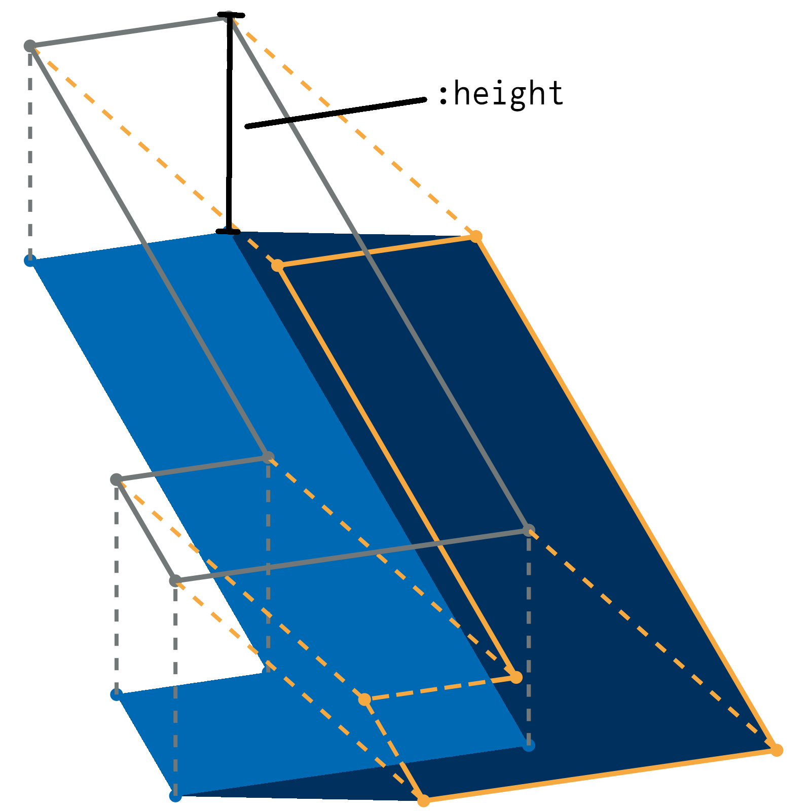

Shadow Casting
Introduction
For buildings, we assume blocks of constant height across their footprint. The footprint is extruded upwards to this constant height and then projected onto the plane.

API
CompositeBuildings.cast_shadow_explicitCompositeBuildings.cast_shadowsCompositeBuildings.extrude_simpleCompositeBuildings.shadow_cleanup
CompositeBuildings.cast_shadow_explicit — Methodcast_shadow_explicit(points, offset_vector)Takes a vector of points describing a polygon and calculates the shadow (pushing each point along offset_vector), by explicitly constructing the rectangles and using ArchGDAL to get the unions. Exact for all polygons, but fairly slow.
CompositeBuildings.cast_shadows — Methodcast_shadows(buildings_df, time::DateTime)
cast_shadows(buildings_df, sun_direction::AbstractVector)creates new DataFrame with the shadows of the buildings in buildings_df.
arguments
buildings_df: DataFrame with metadata ofobservatory. Is assumend to fulfill the requirements for a building source.time: LocalDateTimefor which the shadows shall be calculated. Or:sun_direction: unit vector pointing towards the sun in local coordinates (x east, y north, z up)
returns
DataFrame with columns
id: id of buildinggeometry:ArchGDALpolygon representing shadow of building withidin global coordinates
and the same metadata as buildings_df.
CompositeBuildings.extrude_simple — Methodextrude_simple(points, offset_vector, orthogonal_vector)Takes a vector of points describing a polygon and calculates the shadow (pushing each point along offset_vector), by fiddling around with the coordinates of the points. Works only for convex polygons, but is quite fast.
CompositeBuildings.shadow_cleanup — MethodSometimes, due to numerical errors, the resulting shadows are no longer of polygon type, but might contain some (usually very short) lines or points. This function removes these artefacts and returns only the polygon contained in the shadow.
shadow_cleanup(shadow)entry function for cleanup. dispatches on geomtrait of shadow.
shadow_cleanup(::PolygonTrait, shadow)returns shadow as it is.
shadow_cleanup(::GeometryCollectionTrait, shadow)returns the polygon in the shadow. If there is more than on polygon, or if there is at least one multi polygon it throws an ArgumentError.